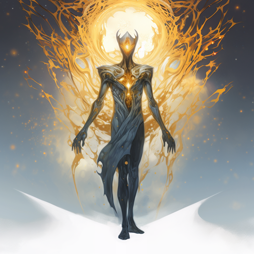
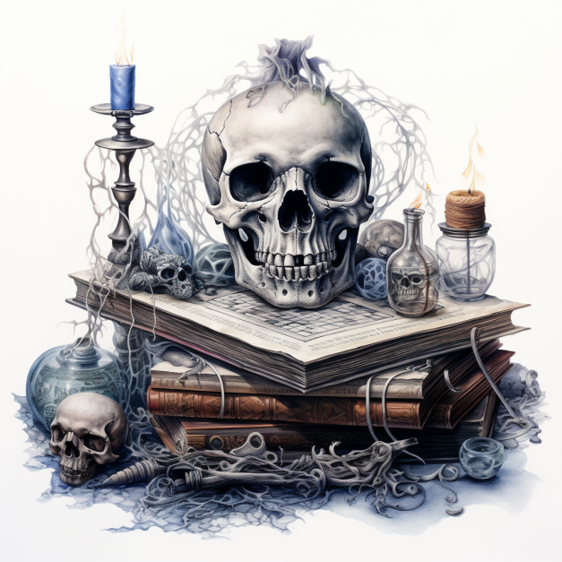
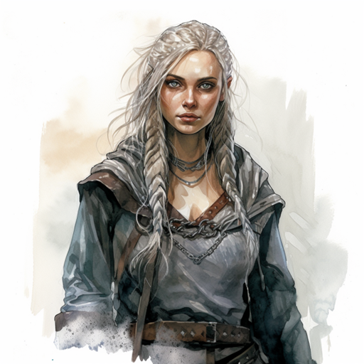
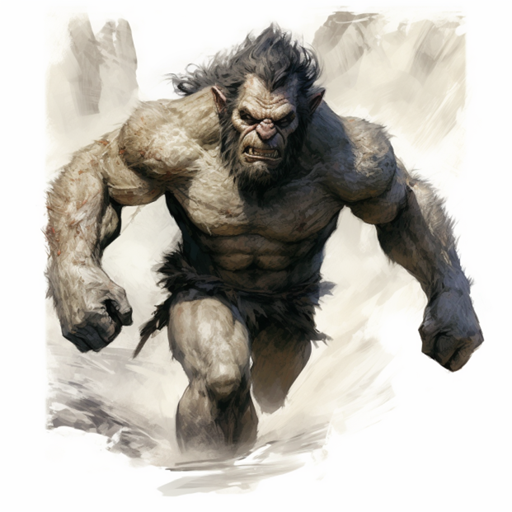
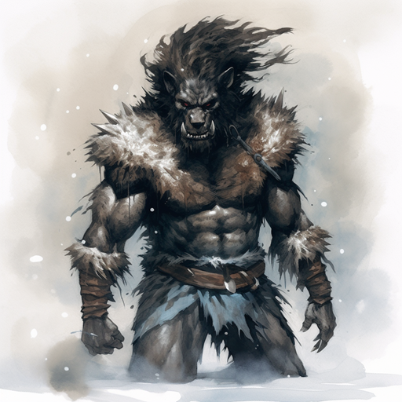
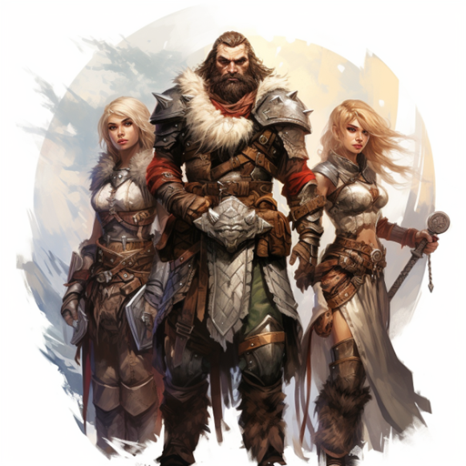

Creation

Phaet. Phaet is everything, everywhere, and everywhen. Phaet is the all. The creator. Before time, before space, there was Phaet. From, and by, Phaet all that is, became. Feeling the need for companionship, Nixil, came to be. Nixil was the first. An experiment without a control, without guidelines. If Phaet is capable of regret, Nixil is regrettable. Others followed, becoming what Phaet had intended Nixil to be. These 'gods' as they would come to be called were of Phaet as was Nixil, but to a much lesser degree. Nixil harassed and tormented these gods, and always argued with Phaet. When Phaet created what mortals know as matter, space, and time, Nixil confronted Phaet insisting that such an uncontrolled abomination should not be brought forth. Nixil was scolded for his doubt and withdrew. However, after corrupting a number of the gods to his point of view. Nixil again confronted Phaet and demanded that he stop. Upon Phaet's refusal, Nixil became enraged. Nixil lashed out at the creation in an attempt to destroy it. To protect the creation, Phaet banished Nixil to the emptiness between matter, space, and time. This place, known as the Void, was of Nothing. Forced to maintain Nixil's imprisonment, Phaet had to let the creation evolve on its own. The gods did what they could to nurture and beautify the creation in honor of Phaet. Within the creation formed things known as worlds, stars, moons, and various other celestial bodies. On some of the worlds life began and evolved. Beings of various types grew to sentience and intrigued Phaet, the gods, and even Nixil, who could see everything but was unable to affect it. On one of these worlds, Entia, numerous beings grew to sentience. Many of these beings also evolved the ability to manipulate the balance of matter, space, and time. The manipulation became known as magic.
Early History of Entia

Since time unknown, elves, dwarves, giants, halflings, and numerous other humanoids have lived upon the continent known as Balric. The elves built several wondrous cities across the continent, which grew into a small empire. The dwarves and giants were content to dwell in the mountains, areas the elves found distasteful. The halflings concealed themselves deep in the forests to the east, using magic to dissuade visitors. The other humanoids dwelled in less desirable regions or tried to conquer others. For almost as long humans dwelt on the now lost continent of Suma. A strange and horrible magic was unleashed on the land and out of fear and ignorance the great tribes of humanity began to war among one another. Those who survived the wars were forced to flee the poisoned land. Great numbers set out to sea in search of new homes. A few managed to make it to Balric.
The First War of Dominance

At first the elves mostly ignored the small settlements of the brutish humans. As more and more humans arrived and the settlements grew into towns, the elves began to feel threatened. A radical faction of elves, led by a handful of powerful mages began to speak out against what they called the invasion of their sacred garden. The clerics of Phaet stood against this growing tide of hatred. Although the humans could have been considered less enlightened than the elves, they too worshipped Phaet. Despite the efforts of the clerics, the radical movement continued to gain momentum. By the time the ruling class adopted the anti-human dogma, peaceful co-existence was no longer an option. Elven forces backed by the mages' devastating power began an all out assault on the human refugees. Out-numbered and defenseless in the face of the elven magic, the humans were overrun. Those not killed in battle, were enslaved. When more refugees from Suma arrived they too were killed or enslaved. Thus began nearly two centuries of hate and war between man and elf. In general the elves proved to be kind masters. However, slavery is slavery, and for generations man endured this burden. Elves can live to be four hundred years old, but can only produce a handful of offspring during that time. Humans, whom seldom live beyond seventy years, however, can produce as many as two dozen offspring in a lifetime. Because of this, the numbers of humans grew rapidly. The elven mages and nobility began to see the rising human population as dangerous. They then issued the "Procreation Proclamations," which stated that no human child could be born with out permission of the woman's elven master. To enforce this, pregnant human women were forced to submit to abortions or be put to death. Without any place to run, the humans had submitted to and endured generations of slavery. They had accepted a loss of freedom, but would not accept a threat to their very existence. Individual acts of rebellion grew into wide spread revolt, which grew into open warfare. Humans greatly outnumbered the elves by this time, and led by such legendary leaders as Krin Morex and Ian Elf-Slayer the tides of war quickly shifted in favor of the humans. Only the power of elven magic gave the elves hope in the face of defeat. The assassination of Krin Morex did nothing but enrage the humans further. After five years of brutal war, the elves had been forced completely out of the north and east, and their capitol in Rac Semder had become their last bastion. Rac Semder was large and well defended. The human armies were worn and tired from the long war and knew they could not lay siege to the city. It was then that the dwarves, who had long been adversaries of the elves, came pouring out of their fortress of Mreec. They joined forces with the humans, nearly doubling their combat ready forces. The Human-Dwarf army laid siege to the massive elven city, and after twelve days of brutal combat it fell. The elves, their capitol conquered and their armies destroyed, either fled into the wilderness or surrendered themselves to the mercy of the humans. The humans knew long in advance of their victory the price the elves would pay. They were enslaved. The dwarves, refusing to take elven slaves, quietly collected some materials from various parts of the elven capitol and returned to their homes in the Tek Ar mountains. And so the slaves had become the masters, and kind masters they were not.
The Horde Wars and the Great Upheaval

Forsaking the ravaged elven capitol, the humans traveled north and began settlements on the banks of the Galt River, in the mountains near the dwarven fortress of Mreec, and on the northern shore of the Aonos Sea. Ian Elf-Slayer became king through a combination of popular support and necessity. The collapse of the elven empire had destablized the entire continent, and a strong military leader was needed. As the human kingdom, known as Laparan, grew, so did the tribes of humanoids all over Balric. Not long after the death of King Ian, these hordes of humanoids, attacked the human and dwarven kingdoms. Strangely organized, yet not unified, the hordes were a mighty force. Although unsuccessful at capturing the city of Tansar or the dwarven fortress of Mreec, they laid siege to the two for eighteen weeks. The humans rallied from their capitol of Galan and managed to push the hordes back into the unknown wilderness. The humans and dwarves rebuilt and began a period of great prosperity. Galan, Tansar, and Ba-ul Naran, on the Aonos, grew into thriving cities. The crown of Laparan went from brow to brow, some weak and some strong. Over a hundred years passed like this. Seemingly from nowhere the hordes attacked again. The humans were caught off guard and paid a high price for it. Once again several of the hordes laid siege to Tansar and Mreec, and although the defenses of Mreec were breached several times, they held fast. Galan did not fair as well. The hordes conquered and sacked the city. It was then that the Great Upheaval occurred. A massive earthquake brought the city of Galan down on its conquerors. Throughout Balric structures, mountains, and trees were felled by the force of the quake. Huge tidal waves battered the coasts and volcanoes belched their anger at the disturbance. The hordes, decimated and in chaos, fled. The human and dwarven armies recovered quickly, and virtually annihilated the fleeing hordes. King Stuart II was killed in the battle for Galan and the royalty of Laparan was in disorder, because their was no true heir to the throne. They split into factions, each with their own claimant to the throne. Maia Wraithchild had the best claim and the largest backing. In frustration the other claimants left behind the ruins of Galan.
The Second War of Dominance

The great kingdom of Laparan was broken into five parts. The Kingdom of Basye formed in the southwest, with Tansar as its capitol. The Kingdom of Naran formed in the southeast, around the city of Ba-ul Naran. The Kingdom of Novdom formed in the east, with its capitol in Vomel. And the Kingdom of Makilor grew from the ruins of Galan and retained most of Laparan. Queen Maia oversaw the construction of Makilor City on the ruins of Galan. Less than a decade of peace passed before Balric was again battered by the mailed fist of war. The elves having grown tired of their shackles brought history full circle and began to revolt. Many killed their masters while they slept, took what wealth they could carry and fled. Most headed north to the plains and glades beyond Makilor. Others began a destructive campaign of guerilla warfare. At the same time the elven revolt was beginning, an army of giants poured out of the mountainous region of Gartome. Why the normally peaceful giants would leave their home to attack neighboring territory, is a question that has yet to be completely answered. The armies of Makilor and Tansar, supplemented by the dwarves, battled them for weeks before pushing the weary giants back to Gartome. While the armies were still afield the cat-like gralner launched a well organized attack against Tansar, despite their normally chaotic society. The fortress city had held against much stronger armies, but its military forces were at a minimum. Women and children had to man the battlements in order to turn back the attack. The gralner army then fell apart and wondered back into the desert. Taking advantage of the turmoil in the north, Duke Tor Bakora of Darcan, declared his duchy a separate nation and crowned himself King. Bakora had backed his cousin Maia Wraithchild in her claim to the throne of Laparan and seemed loyal to the Queen, but his sanity had always been in question.
The New Era

The New Era is said to have begun when the family of de Lucian obtained the throne of Makilor. The ambitious King Gerr Bakora, son of Tor and also of questionable sanity, has waged a series of small and pointless wars against Basye, Makilor, and Naran. Otherwise, the five kingdoms, Makilor, Basye, Novdom, Naran, and Darcan, have been mostly at peace since the Second War of Dominance. When Ran de Lucian became king of Makilor his first act was the emancipation of the elves. As crown prince he had already earned the admiration and support of the dwarven nation and the giants of Gartome. The other royals of Balric, though begrudgingly from Gerr Bakora, gave him their respect. They soon followed his actions by emancipating the elves in their kingdoms as well. King de Lucian granted the elves a region of northern Makilor, in which many of the rouge elves had lived for years. The clerics of Phaet have long known that Nixil, known as That Which Dwells in the Void to mortals, though not able to directly affect their existence, has granted power to mortals. Through these agents Nixil hopes to destroy what it considers an abomination and the cause of its' imprisonment. The clerics believe its' agents to be behind much of the conflict since the First War of Dominance. They have yet to find evidence of their beliefs. So while Darcan and Naran bicker and fight over control of the trade routes in the northern Aonos, and Makilor, Naran, and Darcan clash over control of useless parcels of land, rumors of vile creatures and legions of the undead begin to spread across the land. Prosperity flourishes in the land, yet fear has become the master of emotions. Most disturbing of all, is the word that The Walker, fabled offspring of That Which Dwells, again walks the land. And so the clerics and the wiser of the royalty, Ran de Lucian most of all, have begun to wonder; is it time to set aside petty differences and unite against the common threat?